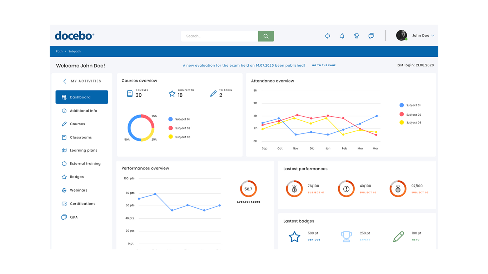

Docebo is a software as a service learning management system which
offers a learning portal for companies and their employees, partners
and customers.

With a strong AI, Docebo was designed to produce immersive learning experiences to train customers, partners, and employees. Docebo’s platform is flexible and allows customers to rapidly scale their learning solutions according to the growing needs of their business
In this project there are several major challenges, the first thing to keep in mind is that dashboards aren’t meant to show everything at hand upfront, understanding what info users want to see is crucial for a functional and efficient dashboard.
Choosing the right graph for the content is another important step,
but could be the trickiest part, because it’s not so easy
understanding the right visual tool to represent a metric.
For this project I used a different approach, I decided to conduct
immediately some user testing to better figure out what the mains
frustrations and expectations are. An effective dashboard design
requires understanding user’s goals, the context of use, timeliness
and interactivity requirements. To do this, after testing the users, I
interviewed a small number of users (5) and I asked them questions to
better understand demographic data, what triggers them to look into a
dashboard, in what context would they review the dashboard, how often
do they review metrics etc.
What emerged from the research was not a problem only of the
dashboard, but an issue with the navbar too. Generally speaking,
having two different menus, (in this case, if you observe the picture
below we are talking about the hamburger and my activities) can
confuse the user because there is no hierarchy which links them,
except for the path in the blue bar. Furthermore, in the homepage,
when the hamburger menu is opened, it overrides the page and the user
can’t navigate the page anymore.
The flows were followed by the making of lo-fi wireframes and then the hi-fi mockup. I created a library on Sketch which gives the chance to keep a consistence design for future editing and new features